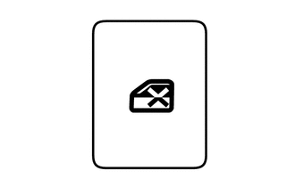
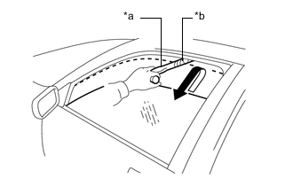
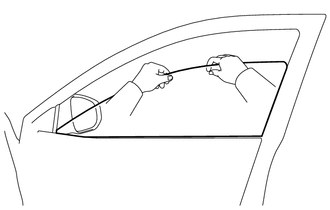

CHECK WINDOW LOCK FUNCTION

Tech Tips
Before performing the window lock switch operation check, make sure that the window lock switch is off (the switch is not pushed in).
Turn the window lock switch of the multiplex network master switch assembly on (pushed in) and check that the front passenger and rear windows are disabled.
Turn the window lock switch off (not pushed in) and check that the front passenger and rear windows can be operated normally.
CHECK MANUAL UP / DOWN FUNCTION
Check that the driver door power window operates as follows:
| Condition | Master Switch | Switch Operation | Power Window |
|---|---|---|---|
| Power switch on (IG) | Driver door | Pulled halfway up | UP (Closes) |
| Pushed halfway down | DOWN (Opens) |
Check that the front passenger door power window and rear door power windows operate as follows:
| Condition | Regulator Switch | Switch Operation | Power Window |
|---|---|---|---|
|
Front passenger door | Pulled halfway up | UP (Closes) |
| Pushed halfway down | DOWN (Opens) | ||
| Rear LH door | Pulled halfway up | UP (Closes) | |
| Pushed halfway down | DOWN (Opens) | ||
| Rear RH door | Pulled halfway up | UP (Closes) | |
| Pushed halfway down | DOWN (Opens) |
CHECK AUTO UP / DOWN FUNCTION
Check that the driver door power window operates as follows:
| Condition | Master Switch | Switch Operation | Power Window |
|---|---|---|---|
| Power switch on (IG) | Driver door | Pulled up (One touch operation) | AUTO UP (Closes) |
| Pushed down (One touch operation) | AUTO DOWN (Opens) |
Check that the front passenger door power window and rear door power windows operate as follows:
| Condition | Regulator Switch | Switch Operation | Power Window |
|---|---|---|---|
|
Front passenger door | Pulled up (One touch operation) | AUTO UP (Closes) |
| Pushed down (One touch operation) | AUTO DOWN (Opens) | ||
| Rear LH door | Pulled up (One touch operation) | AUTO UP (Closes) | |
| Pushed down (One touch operation) | AUTO DOWN (Opens) | ||
| Rear RH door | Pulled up (One touch operation) | AUTO UP (Closes) | |
| Pushed down (One touch operation) | AUTO DOWN (Opens) |
CHECK REMOTE MANUAL UP / DOWN FUNCTION
Check that the front passenger door power window and rear door power windows operate as follows:
| Condition | Master Switch | Switch Operation | Power Window |
|---|---|---|---|
|
Front passenger door | Pulled halfway up | UP (Closes) |
| Pushed halfway down | DOWN (Opens) | ||
| Rear LH door | Pulled halfway up | UP (Closes) | |
| Pushed halfway down | DOWN (Opens) | ||
| Rear RH door | Pulled halfway up | UP (Closes) | |
| Pushed halfway down | DOWN (Opens) |
CHECK REMOTE AUTO UP / DOWN FUNCTION
Check that the front passenger door power window and rear door power windows operate as follows:
| Condition | Master Switch | Switch Operation | Power Window |
|---|---|---|---|
|
Front passenger door | Pulled up (One touch operation) | AUTO UP (Closes) |
| Pushed down (One touch operation) | AUTO DOWN (Opens) | ||
| Rear LH door | Pulled up (One touch operation) | AUTO UP (Closes) | |
| Pushed down (One touch operation) | AUTO DOWN (Opens) | ||
| Rear RH door | Pulled up (One touch operation) | AUTO UP (Closes) | |
| Pushed down (One touch operation) | AUTO DOWN (Opens) |
CHECK KEY-OFF OPERATION FUNCTION
Check that each power window can be operated with the multiplex network master switch assembly, power window regulator switch assembly or rear power window regulator switch assembly after the power switch is turned off.
Tech Tips
If the window lock switch is on, the power windows cannot be operated using the power window regulator switch assembly and rear power window regulator switch assemblies. Therefore, turn the window lock switch off before checking the power window operation.
Check that the key-off operation function does not operate immediately after the driver door or front passenger door is opened.
Tech Tips
If a power window is being operated by auto operation while the key-off operation function is on, and the driver door or front passenger door is opened, the power window will stop operating.*1
If a power window is being operated by auto operation while the key-off operation function is on, and the driver door or front passenger door is opened, the power window will continue operating.*2
*1: w/ Canister Pump Module
*2: w/o Canister Pump Module
Check that all of the power windows cannot be operated after more than approximately 45 seconds have elapsed since the power switch is turned off.
CHECK WIRELESS TRANSMITTER-LINKED FUNCTION (w/o Canister Pump Module)*
*: This function is set through a customize setting, as it is off by default.
Check that all of the power windows operate as follows when operating the electrical key transmitter sub-assembly:
| Condition | Transmitter Operation | Power Window |
|---|---|---|
| No electronic key transmitter sub-assembly is inside vehicle, and all doors are closed and locked | LOCK switch pressed for more than 3 seconds | UP (Closes) |
| No electronic key transmitter sub-assembly is inside vehicle, and all doors are closed and locked | LOCK switch released | STOP |
| No electronic key transmitter sub-assembly is inside vehicle, and all doors are closed and locked | UNLOCK switch pressed for more than 3 seconds | DOWN (Opens) |
| No electronic key transmitter sub-assembly is inside vehicle, and all doors are closed and locked | UNLOCK switch released | STOP |
CHECK KEY-LINKED FUNCTION*
*: This function is set through a customize setting, as it is off by default.
Check that all of the power windows operate as follows:
| Condition | Door Key Cylinder Operation | Power Window |
|---|---|---|
| No electronic key transmitter sub-assembly is inside vehicle, and all doors are closed | Turned to the lock position and held for more than 1.5 seconds | UP (Closes) |
| No electronic key transmitter sub-assembly is inside vehicle, and all doors are closed | Returned to neutral position | STOP |
| No electronic key transmitter sub-assembly is inside vehicle, and all doors are closed | Turned to the unlock position and held for more than 1.5 seconds | DOWN (Opens) |
| No electronic key transmitter sub-assembly is inside vehicle, and all doors are closed | Returned to neutral position | STOP |
CHECK WINDOW OPEN WARNING FUNCTION
Open a window using the power window switch.
Turn the power switch from on (IG) to off, open the driver door with the electronic key transmitter sub-assembly in the vehicle and check that the warning buzzer in the combination meter sub-assembly sounds once. Then, check that "Window opened" is displayed on the multi-information display in the combination meter assembly displays "Window opened".
CHECK JAM PROTECTION FUNCTION
Check the basic function.
CAUTION:
Do not put your fingers between the door frame and door glass to check the jam protection function. Also, prevent any part of your body from being caught during inspection.
Tech Tips
The jam protection function is operative during both the auto up and manual up operations while the hybrid vehicle control system is started or the power switch is on (IG), and also for approximately 45 seconds after the power switch is turned off.
Fully open the power window.

| *a | Check Jig |
| *b | Cloth |
Set a check jig wrapped with a piece of cloth near the power window fully closed position.
Operate the auto up or manual up function and check that the power window stops and goes down after the check jig is caught between the door glass and door frame, and stops.
Tech Tips
If a manual up operation is performed from the seat, the door glass will lower approximately 30 mm (1.181 in.) from the point it contacts the end of the hammer or continue lowering for approximately 5 seconds and then stop.
If a manual up operation is not performed from the seat, the door glass will lower approximately 125 mm (4.921 in.) from the point it contacts the end of the hammer or continue lowering for approximately 5 seconds and then stop.
After the jam protection function operates when an auto up or manual up operation is performed, the jam protection function will not operate when the manual up operation is performed again within approximately 4 seconds.
After the catch protection function has operated, the auto up function will not operate the first time the power window auto up switch is operated. The auto up function will operate normally after the first power window switch operation.
While the power window is moving down, check that the door glass cannot be raised using the power window switch.
CHECK CATCH PROTECTION FUNCTION
Check the basic function.
CAUTION:
Do not put your fingers between the door frame and door glass to check the jam protection function. Also, prevent any part of your body from being caught during inspection.
Tech Tips
The catch protection function is operative during both the auto down and manual down operations while the hybrid vehicle control system is started or the power switch is on (IG), and also for approximately 45 seconds after the power switch is turned off.

Fully close all of the power windows.
Operate the auto down or manual down function to open the power window, grasp the upper edge of the door glass with one or two hands and check that the power window stops.
Tech Tips
After the catch protection function has operated when an auto down or manual down operation was performed, the catch protection function will not operate if the manual down operation is performed again within approximately 4 seconds.
CHECK POWER WINDOW SWITCH LED ILLUMINATION
Check the LED illumination (multiplex network master switch assembly).
Check that the LEDs located in the multiplex network master switch assembly illuminate when the headlight dimmer switch is in the tail position.
Check the LED illumination (power window regulator switch assembly).
Check that the LED located in the power window regulator switch assembly illuminates when the headlight dimmer switch is in the tail position.
Check the LED illumination (rear power window regulator switch assembly).
Check that the LED located in each rear power window regulator switch assembly illuminates when the headlight dimmer switch is in the tail position.